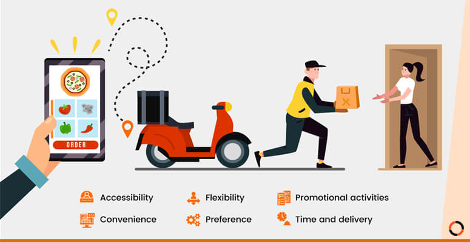

In this article the progress of robotics research is shown in the last half century as a response to the evolution of human social needs, from the industrial robotics that released the human operator from risky tasks to the recent burst of field and service robotics to assist the human. Robotics contracts with the design, construction, operation, and use of robots, as well as computer systems for their control and information processing. These technologies are used to develop machines that can substitute for humans and replicate human actions.The new ideas in robotics research have been designate service robotics because of their goal of getting robots closer to human and this article surveys research on facility robotics such as medical robotics, rehabilitation robotics, underwater robotics, field robotics, construction robotics and humanoid robotics.
Image Name:Envisioning the future of robot
Approximately in 1960 when industrial robots were first introduced in the production process, and until the 1990s industrial robots conquered robotics research. When it is established, the automotive industry dictated the specifications industrial robots had to meet, mainly due to the industry’s market clout and clear technical necessities. These necessities determined which areas of investigation were predominant during that period. One such area was kinematic calibration, which is a necessary process due to the inaccuracy of kinematic models based on manufacturing parameters. The calibration process is carried out in four stages. The first stage is mathematical modeling,where the Denavit-Hartenberg (DH) method and the product-of-exponential (POE) formulation lead the large family of methods.
Image Name:Industrial Robot
UNDERWATER ROBOT:Addition to that 70% of the earth is covered by ocean. However, little effort has been made to exploit or protect this vast resource, compared to space or terrestrial programs.During the last few years, the use of underwater robotic vehicles has rapidly increased, since such vehicles can be operated in the deeper, riskier areas that divers cannot reach. The potential applications of such vehicles include fishing, underwater pollution monitoring, rescue, and waste cleaning and handling in the ocean as well as at nuclear sites. Most commercial unmanned underwater robots are tethered and remotely operated; they are as a group, referred to as remotely operated vehicles (ROVs).
Image Name:Underwater Robot
CONCLUSION:In the introduction of industrial robots in the automotive industry, robotics research has evolved over time towards the development of robotic systems to help the human in dangerous,risky or unpleasant tasks. As the complexity of tasks has increased,flexibility has been demanded in industrial robots, and robotics research has veered towards adaptive and intelligent systems.Since 1995, robotics research has entered the field- and service-robotics world, where we can find manipulators, mobile robots and animal-like robots with great perspectives of development and increasing research interest. Robots such as surgical robots have been the first successes, and recently different areas in medicaland rehabilitation-robotics applications have arisen.
ONLINE FOOD ORDER SYSTEM is mainly designed primarily function for use in the food delivery industry. This system will allow hotels and restaurants to increase online food ordering such type of business. The customers can be selected food menu items just few minutes. In the modern food industries allows to quickly and easily delivery on customer place. Restaurant employees then use these orders through an easy to delivery on customer place easy find out navigate graphical interface for efficient processing.
Image Name:Online food ordering System
INTRODUCTIONIn restaurant-controlled online food ordering, the restaurants create their own website and app, or choose to hire a delivery vendor. If they choose to create their own website, they make sure to obtain software that manages the orders efficiently, meaning it has the capability to manage different orders at once.When they hire a vendor, the restaurant pays for a monthly fee or percentage-based fees. The vendor covers the developmental costs. A customer can choose to have the food delivered or for pick-up. The process consists of a customer choosing the restaurant of their choice, scanning the menu items, choosing an item, and finally choosing for pick-up or delivery.Payment is then administered by paying with a credit card or debit card through the app or website or in cash at the restaurant when going to pickup.The website and app inform the customer of the food quality, duration of food preparation, and when the food is ready for pick-up or the amount of time it will take for delivery.
Image Name:Food Delivery From Restaurant To Home.
WORKINGYour customer places a food order on your website or Facebook page. The order is instantly pushed to your smartphone or tablet where you can review it via the free order taking app we provide. You decide the pickup time/delivery time and your answer is pushed right away, which makes the entire process short and effective. You start cooking and can come back to the order taking app anytime to see past or any pending orders.
Image Name:Working Of Restaurant.
CONCLUSIONOur project is only a humble venture to satisfy the needs to manage their project work. Several user friendly coding have also adopted. This package shall prove to be a powerful package in satisfying all the requirements of the school. The objective of software planning is to provide a frame work that enables the manger to make reasonable estimates made within a limited time frame at the beginning of the software project and should be updated regularly as the project progresses.At the end it is concluded that we have made effort on following points.